감정평가사-1차-1교시 (2016-03-12 기출문제)
1과목: 민법(총칙,물권)
1. 성년후견개시의 심판과 피성년후견인의 행위능력에 관한 설명으로 옳지 않은 것은?
- 가정법원은 성년후견개시의 심판을 할 때 본인의 의사를 고려하여야 한다.
- 성년후견의 개시 또는 종료를 위한 심판은 본인도 청구할 수 있다.
- 가정법원은 피성년후견인이 성년후견인의 동의를 받아야 하는 법률행위의 범위를 정할 수 있다.
- 피성년후견인이 일상생활에 필요하고 그 대가가 과도하지 아니한 법률행위를 한 경우, 성년후견인은 이를 취소할 수 없다.
- 가정법원은, 일정한 자의 청구가 있는 경우, 가정법원이 취소할 수 없는 것으로 정한 피성년후견인의 법률행위의 범위를 변경할 수 있다.
(정답률: 알수없음)

2. 실종선고에 관한 설명으로 옳지 않은 것은? (다툼이 있으면 판례에 따름)
- 실종선고 취소의 청구를 받은 가정법원은 공시최고의 절차를 거칠 필요가 없다.
- 실종선고가 확정되면 실종선고를 받은 자는 실종기간이 만료한 때에 사망한 것으로 본다.
- 실종선고가 취소되더라도 실종기간 만료 후 실종선고 취소 전에 선의로 한 행위의 효력에는 영향을 미치지 아니한다.
- 실종선고의 취소가 있는 경우, 실종선고를 직접원인으로 하여 재산을 취득한 자는 선의이면 그 받은 이익이 현존하는 한도에서 반환할 의무가 있다.
- 부재자의 1순위 상속인이 있는 경우에 4순위의 상속인에 불과한 자는 특별한 사정이 없는 한 부재자에 대한 실종선고를 청구할 이해관계인이 될 수 없다.
(정답률: 알수없음)
3. 사단법인의 사원총회에 관한 설명으로 옳지 않은 것은?
- 사원총회에는 대외적인 대표권이나 대내적인 업무집행권이 없다.
- 각 사원은 평등한 결의권을 가지며, 정관으로도 달리 정할 수 없다.
- 정관에 다른 규정이 없는 한, 총사원의 5분의 1 이상이 회의의 목적사항을 제시하여 총회 소집을 청구한 경우에 이사는 임시총회를 소집하여야 한다.
- 총회는, 정관에 규정이 있으면, 소집 통지에 기재한 목적사항 이외에 대해서도 결의할 수 있다.
- 정관에 다른 규정이 없는 한, 정관변경을 위해서는 총사원의 3분의 2 이상의 동의가 있어야 한다.
(정답률: 알수없음)
4. 민법상 법인의 기관에 관한 설명으로 옳지 않은 것은?
- 특별대리인은 임시기관으로 법인의 대표기관이다.
- 이사에 의해 선임된 대리인은 법인의 대표기관이 아니다.
- 감사는 필요기관으로 그 성명과 주소를 등기하여야 한다.
- 이사가 없는 경우에 이로 인하여 손해가 생길 염려가 있는 때에는 법원은 이해 관계인이나 검사의 청구에 의해 임시이사를 선임하여야 한다.
- 법인의 불법행위가 성립하는 경우, 그 가해행위를 한 이사 기타 대표자는 자기의 손해배상책임을 면하지 못한다.
(정답률: 알수없음)
5. 주물과 종물에 관한 설명으로 옳은 것은? (다툼이 있으면 판례에 따름)
- 독립한 부동산은 종물이 될 수 없다.
- 주물을 처분할 때 당사자의 특약으로 종물만을 별도로 처분할 수도 있다.
- 주물 위에 설정된 저당권의 효력은, 법률의 규정 또는 다른 약정이 없으면, 설정 후의 종물에까지 미치지 않는다.
- 구분건물의 전유부분에 대한 가압류 결정의 효력은 특별한 사정이 없는 한 그 대지권에 미치지 않는다.
- 권리 상호간에는 주물과 종물의 법리가 적용되지 않는다.
(정답률: 알수없음)
6. 사회질서에 반하는 법률행위에 관한 설명으로 옳지 않은 것은? (다툼이 있으면 판례에 따름)
- 오로지 보험사고를 가장하여 보험금을 취득할 목적으로 체결한 생명보험계약은 무효이다.
- 비자금을 소극적으로 은닉하기 위하여 임치한 것은 사회질서에 반하는 법률행위로 볼 수 없다.
- 부첩관계를 청산하면서 희생의 배상 내지 장래 생활대책 마련의 의미로 금원을 지급하기로 한 약정은 공서양속에 반하지 않는다.
- 반사회적 법률행위에 의한 무효를 가지고 선의의 제3자에게는 대항할 수 없다.
- 형사사건에 관한 변호사 성공보수 약정은 재판의 결과를 금전적 대가와 결부시키는 것으로서 사회질서에 위배되는 것으로 평가할 수 있다.
(정답률: 알수없음)
7. 통정허위표시의 무효를 이유로 대항할 수 없는 '제3자'가 될 수 있는 자를 모두 고른 것은? (다툼이 있으면 판례에 따름)
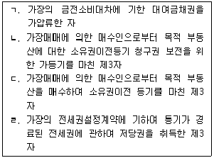
- ㄱ, ㄴ
- ㄷ, ㄹ
- ㄱ, ㄴ, ㄷ
- ㄴ, ㄷ, ㄹ
- ㄱ, ㄴ, ㄷ, ㄹ
(정답률: 알수없음)
8. 착오에 관한 설명으로 옳지 않은 것은? (다툼이 있으면 판례에 따름)
- 대리인에 의한 법률행위에서 착오의 유무는 대리인을 표준으로 판단한다.
- 착오의 존재 여부는 의사표시 당시를 기준으로 판단한다.
- 착오에 의한 취소의 의사표시는 반드시 명시적이어야 하는 것은 아니고, 취소자가 그 착오를 이유로 자신의 법률행위의 효력을 처음부터 배제하려고 한다는 의사가 드러나면 충분하다.
- 착오가 표의자의 중대한 과실로 인한 경우, 상대방이 표의자의 착오를 알고 이를 이용하였더라도, 표의자는 의사표시를 취소할 수 없다.
- 착오를 이유로 법률행위를 취소한 표의자가 상대방에게 불법행위책임을 지는 것은 아니다.
(정답률: 알수없음)
9. 의사표시에 있어서 증명책임에 관한 설명으로 옳지 않은 것은? (다툼이 있으면 판례에 따름)
- 통정허위표시에서 제3자의 악의는 그 허위표시의 무효를 주장하는 자가 증명하여야 한다.
- 사기에 의한 의사표시에서 제3자의 악의는 취소를 주장하는 자가 증명하여야 한다.
- 진의 아닌 의사표시에서 상대방이 진의 아님을 알았거나 과실로 이를 알지 못하였다는 것은 의사표시의 무효를 주장하는 자가 증명하여야 한다.
- 상대방에게 도달하여야 효력이 있는 의사표시를 보통우편의 방법으로 하였다면, 송달의 효력을 주장하는 자가 그 도달을 증명하여야 한다.
- 착오로 인한 의사표시에서 착오가 법률행위 내용의 중요부분에 관한 것이라는 점과 중대한 과실이 없었다는 점은 표의자가 증명하여야 한다.
(정답률: 알수없음)
10. 권한을 넘은 표현대리에 관한 설명으로 옳지 않은 것은? (다툼이 있으면 판례에 따름)
- 복대리인 선임권이 없는 대리인에 의하여 선임된 복대리인의 권한도 기본대리권이 될 수 있다.
- 정당한 이유의 유무는 대리행위 당시와 그 이후의 사정을 고려하여 판단한다.
- 기본대리권은 표현대리행위와 동종 또는 유사할 필요가 없다.
- 권한을 넘은 표현대리는 법정대리에도 적용된다.
- 대리행위가 대리권을 제한하는 강행규정을 위반하여 권한을 넘은 경우에는 표현 대리가 인정되지 않는다.
(정답률: 알수없음)
11. 대리권의 소멸사유가 아닌 것은?
- 본인의 사망
- 대리인의 사망
- 본인의 성년후견의 개시
- 대리인의 성년후견의 개시
- 대리인의 파산
(정답률: 알수없음)
12. 乙은 대리권 없이 행위능력자인 甲의 임의대리인으로 행세하여 甲소유의 부동산을 丙에게 매매하는 계약을 체결하였다. 이에 관한 설명으로 옳지 않은 것은? (표현대리는 고려하지 않으며, 다툼이 있으면 판례에 따름)
- 乙이 위 계약에 따라 丙에게 소유권이전등기를 해준 경우, 甲은 丙명의 등기의 말소를 청구할 수 있다.
- 乙이 위 계약 당시 제한능력자인 경우, 乙은 丙에게 계약의 이행 또는 손해배상 책임을 지지 않는다.
- 甲이 乙의 무권대리행위를 알면서도 丙에게 매매대금을 청구하여 전부를 수령하였다면, 특별한 사정이 없는 한, 위 계약을 추인한 것으로 볼 수 있다.
- 甲이 乙에 대하여 추인을 하였다면 丙이 그 추인 사실을 몰랐더라도 위 계약을 철회할 수 없다.
- 甲의 유효한 추인이 있으면, 특별한 사정이 없는 한, 乙의 행위는 계약 시에 소급하여 甲에게 효력이 있다.
(정답률: 알수없음)
13. 복대리에 관한 설명으로 옳지 않은 것은?
- 임의대리인은 본인의 승낙이나 부득이한 사유가 없으면, 복대리인을 선임하지 못한다.
- 복대리인은 제3자에 대하여도 대리인과 동일한 권리의무가 있다.
- 임의대리인은 본인의 지명에 의해서도 복대리인을 선임할 수 있다.
- 대리인의 대리권이 소멸하면 복대리인의 대리권도 소멸한다.
- 복대리인은 대리인이 본인의 명의로 선임한 본인의 대리인이다.
(정답률: 알수없음)
14. 법률행위의 조건에 관한 설명으로 옳은 것은?
- 조건의 성취가 미정한 권리라도 일반규정에 의하여 처분하거나 상속할 수 있다.
- 조건의 성취로 인하여 불이익을 받을 당사자가 신의성실에 반하여 조건의 성취를 방해하였어도 상대방은 그 조건이 성취한 것으로 주장할 수 없다.
- 모든 법률행위에는 조건을 붙일 수 있다.
- 조건이 법률행위 당시 이미 성취한 것인 경우에는 그 조건이 정지조건이면 그 법률행위는 무효로 한다.
- 조건이 법률행위 당시 이미 성취할 수 없는 것인 경우에는 그 조건이 정지조건이면 조건 없는 법률행위로 한다.
(정답률: 알수없음)
15. 토지거래허가를 받지 않아 토지매매계약이 유동적 무효의 상태에 있는 경우에 관한 설명으로 옳지 않은 것은? (다툼이 있으면 판례에 따름)
- 위 매매계약이 확정적으로 무효로 됨에 있어서 귀책사유가 있는 자는 그 계약의 무효를 주장할 수 없다.
- 허가구역 지정이 해제되면 위 매매계약은 확정적 유효로 된다.
- 허가구역 지정기간이 만료되었음에도 허가구역 재지정을 하지 아니한 경우, 위 매매계약은 확정적 유효로 된다.
- 허가를 받으면 위 매매계약은 소급해서 유효로 되므로 허가 후에 새로 매매계약을 체결할 필요는 없다.
- 사기에 의하여 위 매매계약이 체결된 경우, 취소권자는 토지거래허가를 신청하기 전에 사기에 의한 계약의 취소를 주장하여 거래허가신청협력에 거절의사를 일방적으로 명백히 함으로써, 그 계약을 확정적으로 무효화 시킬 수 있다.
(정답률: 알수없음)
16. 소멸시효의 기산점에 관한 설명으로 옳지 않은 것은? (다툼이 있으면 판례에 따름)
- 채무의 이행기가 도래한 후에 채무자의 요청에 의하여 채권자가 채무자에게 기한을 유예한 경우, 유예한 이행기일로부터 다시 소멸시효가 진행한다.
- 불확정기한부 채권은 객관적으로 기한이 도래하면 그 때부터 소멸시효가 진행한다.
- 동시이행의 항변권이 붙어있는 채권은 그 항변권이 소멸된 이후부터 소멸시효가 진행한다.
- 매수인이 매매 목적물인 부동산을 인도 받아 점유하고 있는 이상 그 소유권이전 등기청구권의 소멸시효는 진행되지 않는다.
- 매매로 인한 소유권이전채무의 이행불능으로 인한 손해배상채권의 소멸시효는 그 소유권이전채무가 이행불능으로 된 때부터 진행한다.
(정답률: 알수없음)
17. 甲(1998년 3월 14일 17시 출생)은 자기 소유의 부동산을 법정대리인인 부모의 동의 없이 2016년 2월 19일 오전 10시경 乙에게 매도하였다. 甲이 직접 계약을 취소하려는 경우, 그 취소권은 언제까지 행사할 수 있는가? (기간 말일의 공휴일 등 기타 사유는 고려하지 않음)
- 2020년 3월 13일 24시
- 2020년 3월 14일 24시
- 2021년 3월 13일 24시
- 2021년 3월 14일 24시
- 2026년 2월 19일 24시
(정답률: 알수없음)
18. 법률행위의 무효에 관한 설명으로 옳지 않은 것은? (다툼이 있으면 판례에 따름)
- 법률행위의 일부분이 무효인 경우, 그 무효부분이 없더라도 법률행위를 하였을 것이라고 인정될 때에는 나머지 부분은 무효가 되지 않는다.
- 매매계약이 매매대금의 과다로 인하여 불공정한 법률행위로서 무효인 경우, 무효행위의 전환에 관한 규정이 적용될 수 없다.
- 무효행위의 추인은 명시적으로뿐만 아니라 묵시적으로도 할 수 있다.
- 부동산 이중매매에서 매도인의 배임행위에 제2매수인이 적극 가담한 경우, 제2매수인의 매매계약은 무효이고 추인에 의하여 유효로 되지 않는다.
- 무효인 가등기를 유효한 등기로 전용하기로 한 약정은 그 때부터 유효하고, 이로써 그 가등기가 소급하여 유효한 등기로 전환될 수 없다.
(정답률: 알수없음)
19. 법률행위의 부관에 관한 설명으로 옳지 않은 것은? (다툼이 있으면 판례에 따름)
- 조건을 붙이고자 하는 의사가 있더라도 그것이 표시되지 않으면 법률행위의 부관으로서의 조건이 되는 것은 아니다.
- 어떤 조건이 붙어 있었는지 아닌지는 그 조건의 존재를 주장하는 자가 이를 증명하여야 한다.
- 당사자는 조건의 성부가 미정인 동안에 조건의 성취로 인하여 생길 상대방의 이익을 해하지 못한다.
- 조건의 내용 자체가 불법적인 것이어서 무효일 경우, 그 법률행위 전부가 무효로 된다.
- 부관에 표시된 사실이 발생하지 아니하는 것이 확정된 때에도 그 채무를 이행하여야 한다고 보는 것이 상당한 경우, 조건부 법률행위로 보아야 한다.
(정답률: 알수없음)
20. 소멸시효에 관한 설명으로 옳지 않은 것은? (다툼이 있으면 판례에 따름)
- 소유권에 기한 물권적 청구권은 소멸시효의 대상이 되지 않는다.
- 공유관계가 존속하는 한 공유물분할청구권만이 독립하여 시효로 소멸될 수 없다.
- 소멸시효를 주장하는 자가 제기한 소에 권리자가 응소하여 적극적으로 권리를 주장하고 그것이 받아들여진 경우, 응소한 때에 소멸시효가 중단된다.
- 근저당권설정등기청구의 소제기에는 그 피담보채권이 될 채권에 대한 소멸시효 중단효력은 없다.
- 소멸시효의 중단사유로서의 승인은 소멸시효의 진행이 개시된 이후에만 가능하다.
(정답률: 알수없음)
21. 가등기에 관한 설명으로 옳지 않은 것은? (다툼이 있으면 판례에 따름)
- 가등기상의 권리의 이전등기를 가등기에 대한 부기등기의 형식으로 할 수 있다.
- 저당권설정등기청구권을 보전하기 위한 가등기는 인정되지 않는다.
- 가등기에 기한 본등기가 경료되더라도 본등기에 의한 물권변동의 효력이 가등기한 때로 소급하여 발생하는 것은 아니다.
- 가등기가 부적법하게 말소된 후 소유권이전등기를 마친 제3자는 가등기의 회복등기절차에서 승낙의무가 있다.
- 가등기에 기한 본등기청구권과 소유권이전등기청구권은 그 등기원인이 동일하더라도 서로 다른 청구권으로 보아야 한다.
(정답률: 알수없음)
22. 명인방법에 관한 설명으로 옳지 않은 것은? (다툼이 있으면 판례에 따름)
- 관습법상의 공시방법이다.
- 수확되지 아니한 농작물에 대해서도 인정된다.
- 토지의 지상물이 독립된 물건이며 현재의 소유자가 누구라는 것을 명시하여야 한다.
- 명인방법으로 양도담보를 공시할 수 없다.
- 건물 이외의 지상물을 토지 또는 원물과 분리하지 않은 채 독립된 거래객체로 하는 데 이용된다.
(정답률: 알수없음)
23. 선의취득에 관한 설명으로 옳지 않은 것은? (다툼이 있으면 판례에 따름)
- 경매에 의한 동산의 취득에는 선의취득이 인정되지 않는다.
- 점유개정은 선의취득에서의 인도의 방법으로 인정되지 않는다.
- 간이인도는 선의취득에서의 인도의 방법으로 인정된다.
- 저당권은 선의취득의 대상이 아니지만 동산질권은 선의취득의 대상이 된다.
- 물권적 합의가 동산의 인도보다 먼저 행하여지면 양수인의 선의ㆍ무과실은 인도된 때를 기준으로 판단한다.
(정답률: 알수없음)
24. 등기의 효력에 관한 설명으로 옳은 것은? (다툼이 있으면 판례에 따름)
- 소유권이전청구권 보전을 위한 가등기가 있어도 소유권이전등기를 청구할 어떤 법률관계가 있다고 추정되지 않는다.
- 허무인(虛無人)으로부터 이어받은 소유권이전등기의 경우에도 그 등기명의자의 소유권은 추정된다.
- 신축된 건물의 소유권보존등기 명의자는 실제로 그 건물을 신축한 자가 아니더라도 적법한 권리자로 추정된다.
- 등기가 원인 없이 말소된 경우, 그 회복등기가 마쳐지기 전이라면 말소된 등기의 등기명의인은 적법한 권리자로 추정되지 않는다.
- 소유권이전등기 명의자는 그 전(前) 소유자에 대하여 적법한 등기원인에 의해 소유권을 취득한 것으로 추정되지 않는다.
(정답률: 알수없음)
25. 중간생략등기에 관한 설명으로 옳지 않은 것은? (다툼이 있으면 판례에 따름)
- 甲이 신축한 건물을 乙이 매수한 후, 당사자들의 합의에 따라 경료된 乙명의의 보존등기는 유효하다.
- 토지거래허가구역 내 토지가 甲에서 乙, 乙에서 丙으로 매도되고 중간생략등기의 합의가 있더라도, 丙이 자신과 甲을 매매 당사자로 하는 토지거래허가를 받아 丙앞으로 경료된 소유권이전등기는 무효이다.
- 매도인 甲, 중간매수인 乙, 최후매수인 丙사이에 중간생략등기에 대한 전원의 합의가 없는 경우, 丙은 甲에 대하여 직접 자기에게 이전등기를 청구할 수 없다.
- 매도인 甲, 중간매수인 乙, 최후매수인 丙이 甲으로부터 丙으로 이전등기를 해주기로 전원 합의한 경우, 乙이 대금을 지급하지 않더라도 甲은 丙에게 소유권이전등기를 해주어야 한다.
- 매도인 甲, 중간매수인 乙, 최후매수인 丙이 甲으로부터 丙으로 이전등기를 해주기로 전원 합의한 경우에도 乙은 甲에 대한 등기청구권을 잃지 않는다.
(정답률: 알수없음)
26. 2015년 5월경 명의신탁자 乙과 명의수탁자 丙의 약정에 따라, 丙은 매수인으로서 부동산 매도인 甲과 매매계약을 체결하고 대금을 지급한 후, 자신의 명의로 소유권이전등기를 경료받았다. 이에 관한 설명으로 옳은 것을 모두 고른 것은? (단, 「부동산 실권리자명의 등기에 관한 법률」제8조(종중, 배우자 및 종교단체에 관한 특례) 등에 해당하는 예외 사유가 없으며, 다툼이 있으면 판례에 따름)
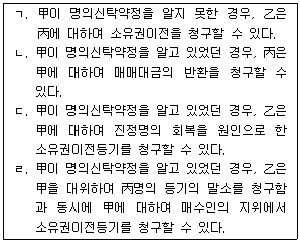
- ㄱ
- ㄴ
- ㄴ, ㄹ
- ㄷ, ㄹ
- ㄱ, ㄷ, ㄹ
(정답률: 알수없음)
27. 부동산 등기에 관한 설명으로 옳지 않은 것은? (다툼이 있으면 판례에 따름)
- 토지소유자가 그 지상에 건물을 신축하는 경우, 보존등기를 하여야 건물의 소유권을 취득한다.
- 무효인 중복등기에 바탕을 둔 등기부취득시효는 인정되지 않는다.
- 무효등기를 유용하는 합의는 그 합의 전에 등기상의 이해관계 있는 제3자가 없는 경우에는 유효하다.
- 증여에 의하여 부동산을 취득하였지만 등기원인을 매매로 기재하였더라도 그 등기는 유효하다.
- 「민법」에서는 등기의 추정력에 관한 규정을 두고 있지 않다.
(정답률: 알수없음)
28. 공유에 관한 설명으로 옳지 않은 것은? (다툼이 있으면 판례에 따름)
- 공유자 사이에 다른 특약이 없는 한 그 지분의 비율로 공유물의 관리비용 기타 의무를 부담한다.
- 공유자의 1인이 상속인 없이 사망한 경우, 그 지분은 다른 공유자에게 각 지분의 비율로 귀속된다.
- 공유물을 손괴한 자에 대하여 공유자 중 1인은 특별한 사유가 없는 한 공유물에 발생한 손해의 전부를 청구할 수 있다.
- 공유토지 위에 건물을 신축하기 위해서는 공유자 전원의 동의가 있어야 한다.
- 공유자가 다른 공유자의 지분권을 대외적으로 주장하는 것은 보존행위가 아니다.
(정답률: 알수없음)
29. 부합에 관한 설명으로 옳지 않은 것은? (다툼이 있으면 판례에 따름)
- 부동산에 동산이 부합한 경우, 동산의 가격이 부동산의 가격을 초과하더라도 부동산의 소유자가 부합한 동산의 소유권을 취득한다.
- 동산끼리 부합된 경우, 주종을 구별할 수 없는 때에는 각 동산의 소유자가 부합 당시의 가액의 비율로 합성물을 공유한다.
- 토지 위에 건물이 신축 완공된 경우에 건물은 토지에 부합하지 않는다.
- 권원이 없는 자가 토지소유자의 승낙 없이 그 토지 위에 나무를 심은 경우, 특별한 사정이 없는 한, 토지소유자에 대하여 그 나무의 소유권을 주장할 수 있다.
- 건물의 임차인이 권원에 기하여 증축한 부분이 독립성을 가지면 증축된 부분은 부합되지 않는다.
(정답률: 알수없음)
30. 甲소유 X토지에 대하여 乙이 점유취득시효를 완성하였으나 등기를 경료하지 못하고 있는 경우에 관한 설명으로 옳지 않은 것은? (다툼이 있으면 판례에 따름)
- 甲이 丙에게 X토지를 매도하여 이전등기를 마치면, 乙은 甲에 대한 시효취득의 효력을 丙에게 주장할 수 없다.
- 위의 ①에서 丙이 甲의 배임행위에 적극 가담한 경우에는 甲과 丙의 매매는 반사회질서 법률행위로서 무효가 된다.
- 乙이 점유를 상실하면 시효이익의 포기로 간주되어 취득한 소유권이전등기청구권은 소멸한다.
- 乙의 X토지에 대한 취득시효의 주장에도 불구하고 甲이 악의로 丙에게 이를 매도한 경우, 乙은 甲에 대하여 손해배상을 청구할 수 있다.
- X토지가 수용된 경우, 그 전에 乙이 甲에 대하여 시효취득기간만료를 원인으로 등기청구권을 행사하였다면 대상청구권을 행사할 수 있다.
(정답률: 알수없음)
31. 점유자와 회복자의 법률관계에 관한 설명으로 옳지 않은 것은? (다툼이 있으면 판례에 따름)
- 타인의 건물을 선의로 점유한 자는 비록 법률상 원인 없이 사용하였더라도 이로 인한 이득을 반환할 의무가 없다.
- 악의의 점유자가 과실을 소비한 경우에는 그 과실의 대가를 보상하여야 한다.
- 점유물이 점유자의 책임 있는 사유로 인하여 멸실 또는 훼손된 경우, 선의의 자주점유자는 그 이익이 현존하는 한도에서 배상하여야 한다.
- 선의의 점유자가 본권에 관한 소에서 패소한 경우, 제소 후 판결확정 전에 취득한 과실은 반환할 의무가 없다.
- 점유자가 과실을 취득한 경우에는 통상의 필요비의 상환을 청구하지 못한다.
(정답률: 알수없음)
32. 주위토지통행권에 관한 설명으로 옳지 않은 것은? (다툼이 있으면 판례에 따름)
- 토지의 분할 및 일부양도의 경우, 무상주위통행권에 관한「민법」의 규정은 포위된 토지 또는 피통행지의 특정승계인에게 적용되지 않는다.
- 주위토지통행권은 이를 인정할 필요성이 없어지면 당연히 소멸한다.
- 기존의 통로가 있더라도 당해 토지의 이용에 부적합하여 실제로 통로로서 충분한 기능을 하지 못하고 있는 경우에도 주위토지통행권이 인정된다.
- 통행지소유자는 주위토지통행권자의 허락을 얻어 사실상 통행하고 있는 자에게는 그 손해의 보상을 청구할 수 없다.
- 주위토지통행권이 인정되는 도로의 폭과 면적을 정함에 있어서,「건축법」에 건축과 관련하여 도로에 관한 폭 등의 제한규정이 있으면 이에 따라 결정하여야 한다.
(정답률: 알수없음)
33. 건물의 구분소유 및 집합건물 등에 관한 설명으로 옳지 않은 것은? (다툼이 있으면 판례에 따름)
- 공용부분을 전유부분으로 변경하기 위하여는 구조상으로나 이용상으로 다른 전유부분과 독립되어 있어야 한다.
- 구분소유자 중 일부가 복도, 계단과 같은 공용부분의 일부를 아무런 권원 없이점유ㆍ사용하는 경우, 특별한 사정이 없는 한 다른 구분소유자들에게 임료 상당의 손해가 발생한 것으로 볼 수 있다.
- 대지에 대한 지상권도 대지사용권이 될 수 있다.
- 집합건물의 관리단은 구분소유자 전원을 구성원으로 하며, 별도의 설립행위가 필요하지 않다.
- 구분건물이 물리적으로 완성되기 전이라도 건축허가신청 등을 통하여 구분의사가 객관적으로 표시되면 구분행위의 존재를 인정할 수 있다.
(정답률: 알수없음)
34. 근저당권에 관한 설명으로 옳은 것은? (다툼이 있으면 판례에 따름)
- 근저당권의 피담보채무가 확정되기 이전에는 채무자를 변경할 수 없다.
- 근저당권의 확정 전에 발생한 원본채권으로부터 그 확정 후에 발생하는 이자는 채권최고액의 범위 내에서 여전히 담보된다.
- 선순위근저당권자가 경매를 신청하는 경우, 후순위근저당권의 피담보채권의 확정시기는 경매개시결정시이다.
- 근저당권의 존속 중에 피담보채권이나 기본계약과 분리하여 근저당권만을 양도할 수도 있다.
- 채권의 총액이 채권최고액을 초과하는 경우, 채무자 겸 근저당권설정자는 근저당권의 확정 전이라도 채권최고액을 변제하고 근저당권의 말소를 청구할 수 있다.
(정답률: 알수없음)
35. 유치권에 관한 설명으로 옳지 않은 것은? (다툼이 있으면 판례에 따름)
- 임차인의 임차보증금반환청구권은 임차건물에 관하여 생긴 채권이라 할 수 없다.
- 점유를 침탈 당한 유치권자가 점유회수의 소를 제기하면 유치권을 보유하는 것으로 간주된다.
- 유치권의 발생을 배제하는 특약은 유효하다.
- 피담보채권이 변제기에 이르지 아니하면 유치권을 행사할 수 없다.
- 유치권자는 유치물의 과실을 수취하여 다른 채권보다 우선하여 그 채권의 변제에 충당할 수 있다.
(정답률: 알수없음)
36. 甲은 자신의 건물에 乙명의의 전세권(전세금 1억원)을 설정해 주었다. 그 후 乙이 그 전세권에 丙명의의 저당권(피담보채권액 7천만원)을 설정해 주었다. 이에 관한 설명으로 옳은 것을 모두 고른 것은? (다툼이 있으면 판례에 따름)
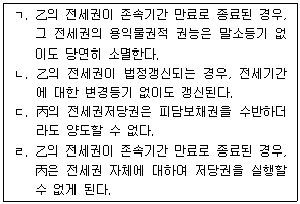
- ㄱ
- ㄴ, ㄷ
- ㄴ, ㄹ
- ㄱ, ㄴ, ㄹ
- ㄱ, ㄷ, ㄹ
(정답률: 알수없음)
37. 乙은 자기 소유의 돼지 1천 마리를 甲에게 유동집합물로서 점유개정의 방식으로 양도담보한 후 계속 사육하고 있다. 이에 관한 설명으로 옳지 않은 것은?(다툼이 있으면 판례에 따름)
- 甲의 양도담보권의 효력은 원칙적으로 위 돼지들이 출산한 새끼돼지들에도 미친다.
- 만일 화재로 위 돼지들이 폐사하여 乙이 화재보험금청구권을 취득하면, 이에 대해 甲은 양도담보권에 기한 물상대위권을 행사할 수 있다.
- 만일 乙이 위 돼지들을 丙에게 점유개정의 방식으로 인도한다면, 丙은 선의취득을 할 수 없다.
- 만일 乙이 양도담보 사실을 알고 있는 丁에게 위 돼지들을 양도한 후, 丁이 5백 마리의 돼지를 새로 구입하여 반입한 경우, 별도자금을 투입해 반입한 사실을 증명하면 甲의 양도담보권의 효력은 그 새로 구입한 돼지들에게 미치지 않는다.
- 만일 乙이 위 돼지들을 戊에게 점유개정의 방식으로 인도하여 이중으로 양도담보한다면, 戊는 양도담보권을 선의취득한다.
(정답률: 알수없음)
38. 지역권에 관한 설명으로 옳지 않은 것은?
- 민법상 지역권의 존속기간은 최장 30년이지만 갱신할 수 있고, 이를 등기하여 제3자에 대항할 수 있다.
- 요역지와 승역지는 반드시 서로 인접할 필요가 없다.
- 공유자의 1인이 지역권을 취득하는 때에는 다른 공유자도 이를 취득한다.
- 지역권설정등기는 승역지의 등기부 을구에 기재된다.
- 지역권자는 지역권을 방해할 염려있는 행위를 하는 자에 대하여 그 예방을 청구할 수 있다.
(정답률: 알수없음)
39. 법정지상권에 관한 설명으로 옳은 것은? (다툼이 있으면 판례에 따름)
- 법정지상권의 성립 후 구건물이 철거되고 신건물이 축조된 경우, 그 법정지상권의 존속기간ㆍ범위 등은 신건물을 기준으로 한다.
- 관습상의 법정지상권에서 건물은 등기가 되어 있지 않아도 무방하나, 무허가건물이어서는 안 된다.
- 토지와 함께 공동근저당권이 설정된 건물이 그대로 존속함에도 등기가 멸실되고 등기부가 폐쇄되면, 그 후 경매로 토지와 건물의 소유자가 달라지더라도 법정지 상권이 성립할 수 없다.
- 구분소유적 공유관계에 있는 자가 자신의 특정 소유가 아닌 부분에 신축한 건물을 제3자에게 양도한 경우에 관습상 법정지상권이 성립한다.
- 가압류 후 본압류 및 강제경매가 이루어지는 경우 관습상 법정지상권의 요건으로 '토지와 그 지상 건물이 동일인 소유'인지 여부는 가압류의 효력 발생 시를 기준으로 한다.
(정답률: 알수없음)
40. 전세권에 관한 설명으로 옳지 않은 것은? (다툼이 있으면 판례에 따름)
- 전세권자가 소유자의 승낙 없이 전세권을 제3자에게 양도한 점만으로는 전세권에 대한 소멸청구사유가 되지 않는다.
- 타인의 토지에 있는 건물에 설정된 전세권의 효력은 그 건물의 소유를 목적으로한 토지임차권에도 미친다.
- 전세권자는 통상의 필요비와 유익비를 지출한 경우, 전세권설정자에게 그 상환을 청구할 수 있다.
- 전세권의 목적물의 일부가 불가항력으로 인하여 멸실된 때에는 그 멸실된 부분의 전세권은 소멸한다.
- 건물의 일부에 대하여만 전세권이 설정되어 있는 경우에 그 전세권자는 건물 전부의 경매를 청구할 수 없다.
(정답률: 알수없음)
2과목: 경제학원론
41. X재의 시장수요함수와 시장공급함수가 각각 QD = 3,600-20P , QS = 300이다. 정부가 X재 한 단위당 100원의 세금을 소비자에게 부과할 때 자중손실(deadweight loss)은? (단, QD는 수요량, QS는 공급량, P는 가격이다.)
- 0원
- 10,000원
- 20,000원
- 30,000원
- 40,000원
(정답률: 알수없음)
42. 소비자 甲은 담배 가격의 변화에 관계없이 담배 구매에 일정한 금액을 지출 한다. 甲의 담배에 대한 수요의 가격탄력성 e는? (단, 담배에 대한 수요의 법칙이 성립하고, 수요의 가격탄력성 e는 절대값으로 표시한다.)
- e = 0
- 0 ＜ e ＜ 1
- e = 1
- 1 ＜ e ＜ ∞
- e =∞
(정답률: 알수없음)
43. X재 시장에 소비자는 甲과 乙만이 존재하고, X재에 대한 甲과 乙의 개별 수요함수가 각각 QD = 10 - 2P , QD = 15 - 3P이다. X재의 가격이 2.5일 때, 시장 수요의 가격탄력성은? (단, QD는 수요량, P는 가격이고, 수요의 가격탄력성은 절대값으로 표시한다.)
- 0.5
- 0.75
- 1
- 1.25
- 1.5
(정답률: 알수없음)
44. 현재 소비자 甲은 주어진 소득 3,000원을 모두 사용하여 가격이 60원인 X재 20단위와 가격이 100원인 Y재 18단위를 소비하려고 한다. 이 때 X재와 Y재의 한계효용이 각각 20으로 동일하다면 효용극대화를 위한 甲의 선택으로 옳은 것은? (단, 소비자 甲의 X재와 Y재에 대한 무차별곡선은 우하향하고 원점에 대하여 볼록하다.)
- 현재 계획하고 있는 소비조합을 선택한다.
- X재 18단위와 Y재 18단위를 소비한다.
- X재 20단위와 Y재 20단위를 소비한다.
- X재의 소비량은 감소시키고 Y재의 소비량은 증가시켜야 한다.
- X재의 소비량은 증가시키고 Y재의 소비량은 감소시켜야 한다.
(정답률: 알수없음)
45. 甲의 효용함수는 U(x, y) = xy이고, X재와 Y재의 가격이 각각 2,000원과 8,000원이며, 소득은 100,000원이다. 예산제약 하에서 甲의 효용이 극대화되는 소비점에서 한계대체율(MRSXY = —ΔY/ ΔX)은? (단, 甲은 X재와 Y재만 소비하고, x는 X재의 소비량, y는 Y재의 소비량이다.)
- 0.25
- 0.5
- 0.75
- 2.0
- 2.5
(정답률: 알수없음)
46. X재의 생산과정에서 양(+)의 외부효과가 발생할 때 균형산출량 수준에서 옳은 것은? (단, X재 시장은 완전경쟁시장이고, X재에 대한 수요의 법칙과 공급의 법칙이 성립하며, 정부의 개입은 없다고 가정한다. P는 X재의 가격, PMC는 X재의 사적 한계비용, SMC는 X재의 사회적 한계비용이다.)
- P = SMC = PMC
- P = PMC ＞ SMC
- P = PMC ＜ SMC
- P = SMC ＜ PMC
- PMC ＜ SMC < P
(정답률: 알수없음)
47. 소비자 이론에 관한 설명으로 옳은 것은? (단, 소비자는 X재와 Y재만 소비한다.)
- 소비자의 효용함수가 U=2XY일 때, 한계대체율은 체감한다.
- 소비자의 효용함수가
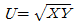
일 때, X재의 한계효용은 체증한다. - 소비자의 효용함수가 U=min(X,Y)일 때, 수요의 교차탄력성은 0이다.
- 소비자의 효용함수가 U=min(X,Y)일 때, 소득소비곡선의 기울기는 음(-)이다.
- 소비자의 효용함수가 U=X+Y일 때, X재의 가격이 Y재의 가격보다 크더라도 X재와 Y재를 동일 비율로 소비한다.
(정답률: 알수없음)
48. 甲기업의 단기 총비용함수가 C = 25 + 5Q일 때, 甲기업의 단기 비용에 관한설명으로 옳은 것은? (단, Q는 양(+)의 생산량이다.)
- 모든 생산량 수준에서 평균 가변비용과 한계비용은 같다.
- 모든 생산량 수준에서 평균 고정비용은 일정하다.
- 생산량이 증가함에 따라 한계비용은 증가한다.
- 평균비용 곡선은 U자 형태이다.
- 생산량이 일정 수준 이상에서 한계비용이 평균비용을 초과한다.
(정답률: 알수없음)
49. 독점적 경쟁시장의 특성에 해당하는 것을 모두 고른 것은? (단, 독점적 경쟁 시장의 개별 기업은 이윤극대화를 추구한다.)
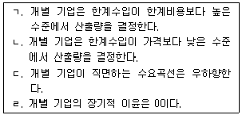
- ㄱ, ㄴ
- ㄱ, ㄷ
- ㄷ, ㄹ
- ㄱ, ㄴ, ㄹ
- ㄴ, ㄷ, ㄹ
(정답률: 알수없음)
50. 독점기업 甲은 두 시장 A, B에서 X재를 판매하고 있다. 생산에 있어서 甲의 한계비용은 0이다. 甲이 A, B에서 직면하는 수요함수는 각각 QA = a1 - b1PA, QB = a2 - b2PB이고, 甲이 각 시장에서 이윤극대화를 한 결과 두 시장의 가격이 같아지게 되는 (a1, b1, a2, b2)의 조건으로 옳은 것은? (단, a1, b1, a2, b2는 모두 양(+)의 상수이고, QA, QB는 각 시장에서 팔린 X재의 판매량이며, PA,PB는 각 시장에서 X재의 가격이다.)
- a1a2 = b1b2
- a1b1 = a2b2
- a1b2 = a2b1
- a1+b1 = a2+b2
- a1+b2 = a2+b1
(정답률: 알수없음)
51. 기펜재(Giffen goods)의 수요에 관한 설명으로 옳은 것을 모두 고른 것은?
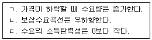
- ㄱ
- ㄴ
- ㄱ, ㄷ
- ㄴ, ㄷ
- ㄱ, ㄴ, ㄷ
(정답률: 알수없음)
52. 독점기업 甲이 직면하고 있는 수요곡선은 QD = 100 - 2P이다. 甲이 가격을 30으로 책정할 때 한계수입은? (단, QD는 수요량, P는 가격이다.)
- -20
- 0
- 10
- 40
- 1,200
(정답률: 알수없음)
53. 완전경쟁시장에서 이윤을 극대화하는 개별기업의 장기비용함수가 C = Q3 - 4Q2 + 8Q이다. 완전경쟁시장의 장기균형가격(P )과 개별기업의 장기균형생산량(Q)은? (단, 모든 개별기업의 장기비용함수는 동일하다.)
- P = 1, Q = 1
- P = 1, Q = 2
- P = 2, Q = 4
- P = 4, Q = 2
- P = 4, Q = 4
(정답률: 알수없음)
54. 이윤극대화를 추구하는 독점기업과 완전경쟁기업의 차이점에 관한 설명으로 옳지 않은 것은?
- 독점기업의 한계수입은 가격보다 낮은 반면, 완전경쟁기업의 한계수입은 시장가격과 같다.
- 독점기업의 한계수입곡선은 우상향하는 반면, 완전경쟁기업의 한계수입곡선은 우하향한다.
- 독점기업이 직면하는 수요곡선은 우하향하는 반면, 완전경쟁기업이 직면하는 수요곡선은 수평이다.
- 단기균형에서 독점기업은 가격이 한계비용보다 높은 점에서 생산하는 반면, 완전경쟁기업은 시장가격과 한계비용이 같은 점에서 생산한다.
- 장기균형에서 독점기업은 경제적 이윤을 얻을 수 있는 반면, 완전경쟁기업은 경제적 이윤을 얻을 수 없다.
(정답률: 알수없음)
55. X재 생산에 대한 현재의 노동투입 수준에서 노동의 한계생산은 15, 평균생산은 17, X재의 시장 가격은 20일 경우, 노동의 한계생산물가치(VMPL)는? (단, 상품시장과 생산요소시장은 모두 완전경쟁시장이다.)
- 200
- 255
- 300
- 340
- 400
(정답률: 알수없음)
56. 다음은 A국과 B국의 교역관계에 대한 보수행렬(payoff matrix)이다. 이에 관한 설명으로 옳은 것은? (단, 보수쌍에서 왼쪽은 A국의 보수이고, 오른쪽은 B국의 보수이다.)
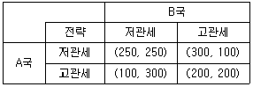
- 내쉬균형은 2개이다.
- 내쉬균형에 해당하는 보수쌍은 (200, 200)이다.
- 우월전략균형에 해당하는 보수쌍은 (100, 300)이다.
- A국의 우월전략은 고관세이다.
- B국의 우월전략은 저관세이다.
(정답률: 알수없음)
57. 甲기업의 공급함수는 Q = 100 + 2P이다. P > 0일 때 甲의 공급에 대한 가격 탄력성 e는? (단, P는 가격, Q는 수량이다.)
- e = 0
- 0 ＜ e ＜ 1
- e = 1
- 1 ＜ e ＜ 2
- e = 2
(정답률: 알수없음)
58. 甲은 X재와 Y재 두 재화를 1 : 1 비율로 묶어서 소비한다. X재의 가격과 수요량을 각각 PX와 QX라 한다. 소득이 1,000이고 Y재의 가격이 10일 때 甲의 X재 수요함수로 옳은 것은? (단, 소비자는 효용을 극대화하고 소득을 X재와 Y재 소비에 모두 지출한다.)
- QX = 1,000/(10 + PX)
- QX = 990 - PX
- QX = 500 - PX
- QX = 1,000 – PX
- QX = 500/PX
(정답률: 알수없음)
59. 소득분배가 완전히 균등한 경우를 모두 고른 것은?
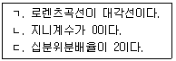
- ㄱ
- ㄴ
- ㄱ, ㄷ
- ㄴ, ㄷ
- ㄱ, ㄴ, ㄷ
(정답률: 알수없음)
60. 시장수요함수가 Q = 100 - P인 경우, 비용함수가 C = Q2인 독점기업의 이윤 극대화 가격은? (단, P는 가격, Q는 수량이다.)
- 0
- 25
- 50
- 75
- 100
(정답률: 알수없음)
61. 실질이자율이 가장 높은 것은?
- 명목이자율 = 1%, 물가상승률= 1%
- 명목이자율= 1%, 물가상승률 = -10%
- 명목이자율 = 5%, 물가상승률= 1%
- 명목이자율= 10%, 물가상승률 = 1%
- 명목이자율 = 10%, 물가상승률 = 10%
(정답률: 알수없음)
62. 한국의 경상수지에 기록되지 않는 항목은?
- 한국에서 생산된 쌀의 해외 수출
- 중국인의 한국 내 관광 지출
- 한국의 해외 빈국에 대한 원조
- 한국 노동자의 해외 근로소득 국내 송금
- 한국인의 해외 주식 취득
(정답률: 알수없음)
63. B국의 명목GDP는 2013년 1,000억 달러에서 2014년 3,000억 달러로 증가했다. B국의 GDP 디플레이터가 2013년 100에서 2014년 200으로 상승했다면 B국의 2013년 대비 2014년 실질GDP 증가율은 얼마인가?
- 5%
- 10%
- 25%
- 50%
- 100%
(정답률: 알수없음)
64. B국의 총생산함수는 Y = AK1/4L3/4이다. 2015년 B국의 총생산 증가율이 4%, 총요소생산성 증가율이 2%, 노동량 증가율이 1%일 경우 성장회계에 따른 2015년 자본량 증가율은? (단, Y는 총생산, A는 총요소생산성, K는 자본량, L은 노동량이다.)
- 1%
- 2%
- 2.5%
- 4%
- 5%
(정답률: 알수없음)
65. A국의 거시경제모형이 다음과 같을 때, 총수요곡선으로 옳은 것은?
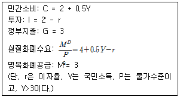
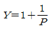
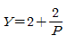
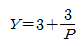
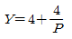
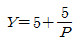
(정답률: 알수없음)
66. A국의 생산가능인구는 500만 명, 취업자 수는 285만 명, 실업률이 5%일 때, A국의 경제활동참가율은?
- 48%
- 50%
- 57%
- 60%
- 65%
(정답률: 알수없음)
67. 폐쇄경제인 A국의 국민소득(Y)이 5,000이고 정부지출(G)이 1,000이며 소비 (C)와 투자(I )가 각각 C = 3,000 - 50r , I = 2,000 - 150r과 같이 이자율(r )의 함수로 주어진다고 할 때, 균형 상태에서의 총저축은? (단, 총저축은 민간저축과 정부저축의 합이다.)
- 1,000
- 1,250
- 1,500
- 2,250
- 2,500
(정답률: 알수없음)
68. 폐쇄경제인 B국의 총생산함수가 Y = AKαL1-α이다. 전염병으로 인하여 L이 갑자기 감소함으로써 발생하는 변화에 관한 설명으로 옳은 것을 모두 고른 것은? (단, A와 K는 일정하며, Y는 총생산, α는 0과 1 사이의 상수값, A는 총요소생산성, K는 자본량, L은 노동량으로 인구와 같다.)
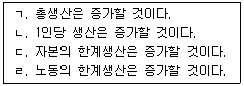
- ㄱ, ㄴ
- ㄱ, ㄷ
- ㄴ, ㄷ
- ㄴ, ㄹ
- ㄷ, ㄹ
(정답률: 알수없음)
69. A국의 총생산함수가 Y = K1/2L1/2이다. 이에 관한 설명으로 옳은 것을 모두고른 것은? (단, Y는 국민소득, K는 자본량, L은 노동량으로 인구와 같다.)
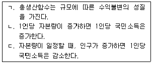
- ㄱ
- ㄴ
- ㄱ, ㄷ
- ㄴ, ㄷ
- ㄱ, ㄴ, ㄷ
(정답률: 알수없음)
70. 개방경제인 A국의 GDP (Y)는 100, 소비(C)는 C = 0.7Y, 투자(I )는 I = 30 - 2r이다. r이 5일 경우, A국의 순수출은 얼마인가? (단, A국의 경제는 균형 상태이며, 정부부문은 고려하지 않고 r은 이자율이다.)
- -10
- 10
- 0
- 20
- 40
(정답률: 알수없음)
71. 실물경기변동이론(real business cycle theory)에 관한 설명으로 옳은 것을 모두 고른 것은?
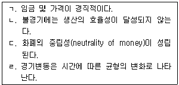
- ㄱ, ㄴ
- ㄱ, ㄷ
- ㄴ, ㄷ
- ㄴ, ㄹ
- ㄷ, ㄹ
(정답률: 알수없음)
72. 어떤 경제의 총수요곡선과 총공급곡선이 각각 P = -YD + 2, P = Pe + (YS - 1)이다. Pe가 1.5일 때, 다음 설명 중 옳은 것을 모두 고른 것은? (단, P는 물가수준, YD는 총수요, YS는 총공급, Pe는 기대물가수준이다.)
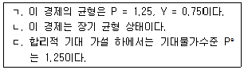
- ㄱ
- ㄴ
- ㄱ, ㄷ
- ㄴ, ㄷ
- ㄱ, ㄴ, ㄷ
(정답률: 알수없음)
73. 다음 중 총수요 확대 정책을 모두 고른 것은?
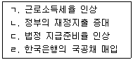
- ㄱ, ㄴ
- ㄱ, ㄷ
- ㄴ, ㄷ
- ㄴ, ㄹ
- ㄷ, ㄹ
(정답률: 알수없음)
74. 실업에 관한 설명으로 옳은 것은?
- 만 15세 미만 인구도 실업률 측정 대상에 포함된다.
- 마찰적 실업은 자연실업률 측정에 포함되지 않는다.
- 더 좋은 직장을 구하기 위해 잠시 직장을 그만둔 경우는 경기적 실업에 해당한다.
- 경기적 실업은 자연실업률 측정에 포함된다.
- 현재의 실업률에서 실망실업자(discouraged workers)가 많아지면 실업률은 하락 한다.
(정답률: 알수없음)
75. 사과와 오렌지만 생산하는 A국의 생산량과 가격이 다음과 같을 때 2014년 대비 2015년의 GDP 디플레이터로 계산한 물가상승률은 얼마인가? (단, 2014년을 기준년도로 한다.)
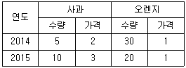
- 20%
- 25%
- 35%
- 45%
- 50%
(정답률: 알수없음)
76. 통화량(M)을 현금(C)과 요구불예금(D)의 합으로, 본원통화(B)를 현금(C)과 지급준비금(R)의 합으로 정의하자. 이 경우 현금보유비율(cr )은 C/D, 지급준비금 비율(rr )은 R/D로 나타낼 수 있다. 중앙은행이 본원통화를 공급할 때 민간은 현금 보유분을 제외하고는 모두 은행에 예금하며, 은행은 수취한 예금 중 지급준비금을 제외하고는 모두 대출한다고 가정한다. cr이 0.2, rr이 0.1이면 통화승수의 크기는?
- 1.5
- 2.0
- 3.7
- 4.0
- 5.3
(정답률: 알수없음)
77. 다음과 같은 폐쇄경제에서 균형 이자율은? (단, Y는 국민소득, C는 소비, I는 투자, G는 정부지출, T는 조세, r은 이자율이다.)
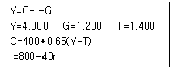
- 2.⑤
- 2.15
- 2.25
- 2.35
- 2.45
(정답률: 알수없음)
78. IS-LM 모형에 관한 설명으로 옳은 것을 모두 고른 것은?
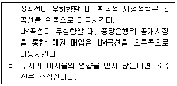
- ㄱ
- ㄴ
- ㄱ, ㄷ
- ㄴ, ㄷ
- ㄱ, ㄴ, ㄷ
(정답률: 알수없음)
79. A국의 단기 필립스곡선은 π=πe-0.4(u-un)이다. 현재 실제인플레이션율이 기대인플레이션율과 동일하고 기대인플레이션율이 변하지 않을 경우, 실제인플레이션율을 2%p 낮추기 위해 추가로 감수해야 하는 실업률의 크기는? (단, u는 실제실업률, un는 자연실업률, π는 실제인플레이션율, πe는 기대인플레이션율이고, 자연실업률은 6%이다.)
- 5.0%p
- 5.2%p
- 5.4%p
- 5.6%p
- 5.8%p
(정답률: 알수없음)
80. 솔로우(Solow) 경제성장모형에서 1인당 생산함수는 y = 2k1/2이다. 감가상각률이 0.2, 인구증가율과 기술진보율이 모두 0이라면, 이 경제의 1인당 소비의 황금률 수준(golden rule level)은? (단, y는 1인당 생산, k는 1인당 자본량이다.)
- 2
- 5
- 10
- 25
- 100
(정답률: 알수없음)
3과목: 부동산학원론
81. 부동산의 개념에 관한 설명으로 옳지 않은 것은?
- 법률적 개념에서 협의의 부동산은 민법 제99조 제1항에서의 '토지 및 그 정착물'을 말한다.
- 부동산의 경우에는 등기로써 공시의 효과를 가지지만 동산은 점유로써 공시의 효과를 가진다.
- 좁은 의미의 부동산과 준부동산을 합쳐 광의의 부동산이라 하며, 자본, 자산 등과 함께 기술적 측면에서의 부동산으로 구분된다.
- 준부동산은 물권변동을 등기나 등록수단으로 공시하는 동산을 포함한다.
- 입목에 관한 법령에 의해 소유권보존등기된 입목, 공장 및 광업재단 저당법령에 의하여 저당권의 목적물이 되고 있는 공장재단은 부동산에 준하여 취급된다.
(정답률: 알수없음)
82. 용도지역지구제에 관한 설명으로 옳지 않은 것은?
- 토지이용에 수반되는 부(-)의 외부효과를 제거하거나 감소시키는 것에 목적이 있다.
- 국토의 계획 및 이용에 관한 법령상 시ㆍ도지사는 도시의 자연환경 및 경관을 보호하고 도시민에게 건전한 여가ㆍ휴식공간을 제공하기 위하여 도시지역 안에서 식생이 양호한 산지의 개발을 제한할 필요가 있다고 인정하면 도시자연공원구역의 지정을 도시ㆍ군관리계획으로 결정할 수 있다.
- 사적시장이 외부효과에 대한 효율적인 해결책을 제시하지 못할 경우, 정부가 부동산규제의 한 방법으로 채택할 수 있다.
- 국토의 계획 및 이용에 관한 법령상 시ㆍ도지사는 시설보호지구를 문화재, 중요 시설물 및 문화적ㆍ생태적으로 보존가치가 큰 지역의 보호와 보존에 필요하면 그 용도지구의 지정 또는 변경을 도시ㆍ군관리계획으로 결정한다.
- 국토의 계획 및 이용에 관한 법령상 시ㆍ도지사는 도시ㆍ군관리계획결정으로 주거 지역을 세분하여 지정할 수 있는데, 공동주택 중심의 양호한 주거환경을 보호하기 위하여 필요한 지역은 제2종전용주거지역으로 지정할 수 있다.
(정답률: 알수없음)
83. 다음은 토지에 관하여 설명한 내용들이다. 옳은 것을 모두 고른 것은?
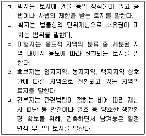
- ㄷ
- ㄱ, ㄴ
- ㄷ, ㄹ
- ㄱ, ㄹ, ㅁ
- ㄴ, ㄷ, ㄹ
(정답률: 알수없음)
84. 부동산의 특성에 관한 설명으로 옳지 않은 것은?
- 부동성으로 인해 부동산활동을 국지화시키고 임장활동을 배제한다.
- 토지는 물리적인 측면에서는 영속성을 가지나, 경제적 가치는 주변상황의 변화에 의하여 하락될 수 있다.
- 영속성으로 인해 토지는 감가상각에서 배제되는 자산이다.
- 개별성으로 인해 부동산활동이 구체적이고 개별적으로 전개되며, 부동산시장에서 정보의 중요성이 증대된다.
- 용도의 다양성으로 인해 토지이용결정과정에서 용도가 경합할 경우, 최유효이용 할 수 있는 방안을 도출하여 실행하게 한다.
(정답률: 알수없음)
85. 에스크로우(Escrow)제도에 관한 설명으로 옳지 않은 것은?
- 매수자는 권원상의 하자나 부담으로부터 발생하는 위험을 사전에 방지할 수 있다.
- 매수자뿐만 아니라 권원의 이전에 관계되는 매도자, 저당대출기관 등의 권익을 보호하는 역할을 한다.
- 권리보험제도와 병행하여 활성화하면 거래안전의 시너지 효과를 거둘 수 있다.
- 공인중개사법령상 개업공인중개사는 거래의 안전을 보장하기 위하여 필요하다고 인정하는 경우에는 거래계약의 이행이 완료될 때까지 계약금ㆍ중도금 또는 잔금을 개업공인중개사 명의로 금융기관에 예치하도록 거래당사자에게 권고할 수 있다.
- 에스크로우 회사는 매도자와 매수자의 협상과정에 참여하여 거래과정에서 발생하는 여러 가지 문제에 대하여 조언을 한다.
(정답률: 알수없음)
86. 부동산 중개계약에 관한 설명으로 옳은 것을 모두 고른 것은?
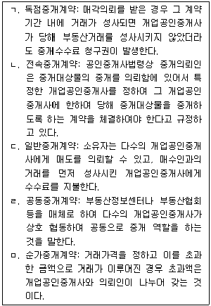
- ㄷ
- ㄱ, ㄴ
- ㄷ, ㄹ
- ㄱ, ㄷ, ㄹ
- ㄷ, ㄹ, ㅁ
(정답률: 알수없음)
87. 부동산권리분석에 관한 설명으로 옳지 않은 것은?
- 권리관계를 취급하지만 재판이나 수사행위와 같이 권력행위가 아니므로 비권력적 성격을 가진다.
- 우리나라 등기는 관련 법률에 다른 규정이 있는 경우를 제외하고는 당사자의 신청 또는 관공서의 촉탁에 따라 행하는 신청주의 원칙을 적용한다.
- 부동산권리분석을 행하는 주체가 분석대상권리의 주요한 사항을 직접 확인해야 한다는 탐문주의의 원칙은 권리분석활동을 하는 데 지켜야 할 이념이다.
- 자료판독을 할 때 환매특약의 등기와 신탁에 관한 등기는 소유권에 관한 사항을 기록하는 부동산 등기부의 을구에서 그 기재사항을 살펴보아야 한다.
- 대상부동산의 권리관계를 조사ㆍ확인하기 위한 판독 내용에는 공법상 이용제한 및 거래규제의 확인ㆍ판단이 포함된다.
(정답률: 알수없음)
88. 부동산권리분석활동을 위한 자료의 조사ㆍ확인 및 분석에 관한 설명으로 옳은 것은?
- 공간정보의 구축 및 관리 등에 관한 법령상 지적도에 기재된 지목의 부호가「공」으로 표기되어 있어, 분석대상부동산의 지목을 공장용지로 확인ㆍ판단하였다.
- 용수 또는 배수를 위하여 일정한 형태를 갖춘 인공적인 수로ㆍ둑 및 그 부속시설물의 부지와 자연의 유수가 있거나 있을 것으로 예상되는 소규모 수로부지를 공간정보의 구축 및 관리 등에 관한 법령상의 지목인 하천으로 확인ㆍ판단하였다.
- 부동산경매에서 경락허가결정 확정 후 경매대금을 완납한 때에 경락인은 등기를 하여야만 목적부동산의 소유권을 취득하는 것으로 확인ㆍ판단하였다.
- 국토의 계획 및 이용에 관한 법령상 토지이용계획확인서를 통해 건물의 소재지, 구조, 용도 등의 사실관계를 확인ㆍ판단하였다.
- 공간정보의 구축 및 관리 등에 관한 법령상 토지대장의 등록사항을 통해 토지소유자가 변경된 날과 그 원인을 확인ㆍ판단하였다.
(정답률: 알수없음)
89. 부동산경기변동에 관한 설명으로 옳지 않은 것은?
- 계절적 변동은 예기치 못한 사태로 초래되는 비순환적 경기변동 현상을 말한다.
- 부동산경기변동이란 일반적으로 상승과 하강국면이 반복되는 현상을 말한다.
- 건축착공량과 부동산거래량은 부동산경기를 측정할 수 있는 지표로 활용될 수있다.
- 하향시장 국면이 장기화되면 부동산 공실률 증가에 의한 임대료 감소 등의 이유로 부동산 소유자에게 부담이 될 수 있다.
- 회복시장은 일반적으로 경기가 하향을 멈추고 상승을 시작하는 국면이다.
(정답률: 알수없음)
90. 디파스퀠리&위튼(DiPasquale&Wheaton)의 4사분면 모형에 관한 설명으로 옳지 않은 것은?
- 부동산 공간시장과 부동산 자산시장의 관계를 설명한 모형이다.
- 1사분면은 부동산 가격과 공간재고량의 관계를 나타낸다.
- 2사분면은 부동산 가격과 임대료의 관계를 나타낸다.
- 3사분면은 부동산 가격과 신규건설량의 관계를 나타낸다.
- 4사분면은 신규건설량과 공간재고량의 관계를 나타낸다.
(정답률: 알수없음)
91. 부동산신탁에 관한 설명으로 옳지 않은 것은?
- 신탁이란 위탁자가 특정한 재산권을 수탁자에게 이전하거나 기타의 처분을 하고, 수탁자로 하여금 수익자의 이익 또는 특정한 목적을 위하여 그 재산권을 관리ㆍ처분하게 하는 법률관계를 말한다.
- 부동산신탁의 수익자란 신탁행위에 따라 신탁이익을 받는 자를 말한다.
- 수익자는 위탁자가 지정한 제3자가 될 수도 있다.
- 신탁계약은 수익자와 위탁자 간에 체결되며 투자자는 위탁자가 발행하는 수익증권을 매입함으로써 수익자가 되어 운용성과를 얻을 수 있게 된다.
- 수탁자는 자산운용을 담당하는 신탁회사가 될 수 있다.
(정답률: 알수없음)
92. 다음에서 설명하는 내용을 모두 충족하는 민간투자사업방식은?
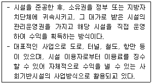
- BOO(build-own-operate)방식
- BTO(build-transfer-operate)방식
- BOT(build-own-transfer)방식
- BLT(build-lease-transfer)방식
- BTL(build-transfer-lease)방식
(정답률: 알수없음)
93. 주택저당대출방식에 관한 설명으로 옳지 않은 것은?
- 원금균등분할상환방식은 대출기간 동안 매기 원금을 균등하게 분할 상환하고 이자는 점차적으로 감소하는 방식이다.
- 원리금균등분할상환방식의 원리금은 대출금에 감채기금계수를 곱하여 산출한다.
- 만기일시상환방식은 만기 이전에는 이자만 상환하다가 만기에 일시로 원금을 상환하는 방식이다.
- 체증분할상환방식은 원리금 상환액 부담을 초기에는 적게 하는 대신 시간이 경과할수록 원리금 상환액 부담을 늘려가는 상환방식이다.
- 원리금균등분할상환방식은 원금이 상환됨에 따라 매기 이자액의 비중은 점차적으로 줄고 매기 원금상환액 비중은 점차적으로 증가한다.
(정답률: 알수없음)
94. 외부효과에 관한 설명으로 옳지 않은 것은?
- 외부효과는 한 사람의 행위가 제3자의 경제적 후생에 영향을 미치고, 그에 대해 지급된 보상을 제3자가 인지하지 못하는 현상을 말한다.
- 정(+)의 외부효과는 핌피(PIMFY) 현상을 초래할 수 있다.
- 부(-)의 외부효과를 완화하기 위한 수단으로 배출권 거래제도 등이 있다.
- 정(+)의 외부효과를 장려하기 위한 수단으로 보조금 지급 등이 있다.
- 공장이 설립된 인근지역에는 당해 공장에서 배출되는 폐수 등으로 인해 부(-)의 외부효과가 발생할 수 있다.
(정답률: 알수없음)
95. 부동산조세 유형 중 보유과세를 모두 고른 것은?
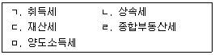
- ㄱ, ㄴ
- ㄴ, ㄷ
- ㄷ, ㄹ
- ㄴ, ㄷ, ㄹ
- ㄷ, ㄹ, ㅁ
(정답률: 알수없음)
96. 도시 및 부동산개발에 관한 설명으로 옳지 않은 것은?
- 부동산개발업의 관리 및 육성에 관한 법령상 부동산개발이란 토지를 건설공사의 수행 또는 형질변경의 방법으로 조성하면서 시공을 담당하는 행위를 말한다.
- 부동산개발업의 관리 및 육성에 관한 법령상 부동산개발업이란 타인에게 공급할 목적으로 부동산개발을 수행하는 업을 말한다.
- 부동산개발업의 관리 및 육성에 관한 법령상 공급이란 부동산개발을 수행하여 그 행위로 조성ㆍ건축ㆍ대수선ㆍ리모델링ㆍ용도변경 또는 설치되거나 될 예정인 부동산, 그 부동산의 이용권으로서 대통령령으로 정하는 권리의 전부 또는 일부를 타인에게 판매 또는 임대하는 행위를 말한다.
- 도시개발법령상 도시개발사업이란 도시개발구역에서 주거, 상업, 산업, 유통, 정보통신, 생태, 문화, 보건 및 복지 등의 기능이 있는 단지 또는 시가지를 조성하기 위하여 시행하는 사업을 말한다.
- 도시 및 주거환경정비법령상 건축물이 훼손되거나 일부가 멸실되어 붕괴 그 밖의 안전사고의 우려가 있는 건축물은 노후ㆍ불량건축물에 해당한다.
(정답률: 알수없음)
97. 다음 ( )에 알맞은 모기지(Mortgage) 증권은?
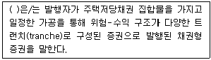
- MPTS(Mortgage Pass-Through Securities)
- MBB(Mortgage Backed Bond)
- MPTB(Mortgage Pay-Through Bond)
- CMO(Collateralized Mortgage Obligation)
- CMBS(Commercial Mortgage Backed Securities)의 MBB
(정답률: 알수없음)
98. 다음 보기에는 지분금융, 메자닌금융(mezzanine financing), 부채금융이 있다. 이 중 지분금융(equity financing)을 모두 고른 것은?
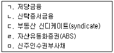
- ㄷ
- ㄴ, ㅁ
- ㄷ, ㄹ
- ㄷ, ㅁ
- ㄱ, ㄷ, ㅁ
(정답률: 알수없음)
99. 다음은 대상부동산의 1년 동안 예상되는 현금흐름이다. (상각전)순영업소득(NOI)은? (단, 주어진 조건에 한함)
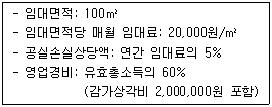
- 10,080,000원
- 10,880,000원
- 11,120,000원
- 12,320,000원
- 12,420,000원
(정답률: 알수없음)
100. 현재 대상부동산의 가치는 3억원이다. 향후 1년 동안 예상되는 현금흐름이 다음 자료와 같을 경우, 대상부동산의 자본환원율(종합환원율)은? (단, 가능 총소득에는 기타소득이 포함되어 있지 않고, 주어진 조건에 한함)
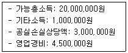
- 4.0 %
- 4.5 %
- 5.5 %
- 6.0 %
- 6.5 %
(정답률: 알수없음)
101. 다음 자료를 활용한 연간 실질임대료는? (단, 주어진 조건에 한함)
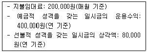
- 2,400,000원
- 2,480,000원
- 2,720,000원
- 2,800,000원
- 2,880,000원
(정답률: 알수없음)
102. 재무비율에 관한 설명으로 옳지 않은 것은?
- 총투자수익률(ROI)은 순영업소득(NOI)을 총투자액으로 나눈 비율이다.
- 지분투자수익률(ROE)은 세후현금흐름(ATCF)을 지분투자액으로 나눈 비율이다.
- 유동비율은 유동자산을 유동부채로 나눈 비율이다.
- 순소득승수(NIM)는 총투자액을 순영업소득으로 나눈 값이다.
- 부채감당률(DCR)이 1보다 작으면 순영업소득으로 원리금 지불능력이 충분하다.
(정답률: 알수없음)
103. 감정평가에 관한 규칙상 감정평가업자가 감정평가를 의뢰받았을 때 의뢰인과 협의하여 확정하여야 할 기본적 사항이 아닌 것은?
- 공시지가
- 기준가치
- 대상물건
- 기준시점
- 감정평가 목적
(정답률: 알수없음)
104. 다음과 같은 복합부동산의 조건하에서 거래시점의 토지 단가는? (단, 건물은 원가법으로 평가함)
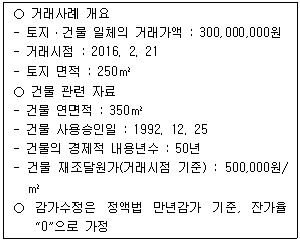
- 811,000원/m2
- 822,000원/m2
- 833,000원/m2
- 844,000원/m2
- 855,000원/m2
(정답률: 알수없음)
1⑤. 감정평가에 관한 규칙상 감정평가에 관한 설명으로 옳지 않은 것은?
- 토지를 감정평가할 때에 부동산 가격공시 및 감정평가에 관한 법률에 따라 공시지가기준법을 적용하여야 한다.
- 공시지가기준법에 따라 토지를 감정평가할 때에는 비교표준지 선정, 시점수정, 지역요인 비교, 개별요인 비교, 그 밖의 요인 보정의 순서에 따라야 한다.
- 건물을 감정평가할 때에 원가법을 원칙적으로 적용하여야 한다.
- 과수원을 감정평가할 때에 수익환원법을 원칙적으로 적용하여야 한다.
- 자동차를 감정평가할 때에 거래사례비교법을 원칙적으로 적용하여야 하나, 본래 용도의 효용가치가 없는 물건은 해체처분가액으로 감정평가할 수 있다.
(정답률: 알수없음)
106. 다음 부동산투자 타당성분석 방법 중 할인기법을 모두 고른 것은?
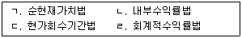
- ㄱ, ㄴ
- ㄴ, ㄷ
- ㄱ, ㄴ, ㄷ
- ㄱ, ㄷ, ㄹ
- ㄴ, ㄷ, ㄹ
(정답률: 알수없음)
107. 다음은 부동산투자의 예상 현금흐름표이다. 이 투자안의 수익성지수(PI)는? (단, 현금유출은 기초, 현금유입은 기말로 가정하고, 0년차 현금흐름은 현금 유출이며, 1년차부터 3년차까지의 현금흐름은 연 단위의 현금유입만 발생함. 할인율은 연 10 %이고, 주어진 조건에 한함)
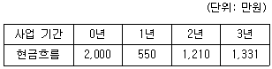
- 1.15
- 1.25
- 1.35
- 1.40
- 1.45
(정답률: 알수없음)
108. A는 주택구입자금을 마련하기 위해 20×6년 1월 1일 현재, 4년 동안 매년 말 1,000만원씩 불입하는 4년 만기의 정기적금에 가입하였다. 이 정기적금의 이자율이 복리로 연 10 %라면 4년 후의 미래가치는?
- 4,541만원
- 4,564만원
- 4,621만원
- 4,641만원
- 4,821만원
(정답률: 알수없음)
109. 부동산투자회사법령상 부동산투자회사에 관한 설명으로 옳은 것은?
- 영업인가를 받은 날부터 6개월이 지난 자기관리 부동산투자회사의 자본금은 70억원 이상이 되어야 한다.
- 위탁관리 부동산투자회사 및 기업구조조정 부동산투자회사의 설립 자본금은 10억원 이상으로 한다.
- 자기관리 부동산투자회사의 설립 자본금은 3억원 이상으로 한다.
- 영업인가를 받은 날부터 6개월이 지난 위탁관리 부동산투자회사 및 기업구조조정 부동산투자회사의 자본금은 100억원 이상이 되어야 한다.
- 부동산투자회사는 부동산 등 자산의 운용에 관하여 회계처리를 할 때에는 국토교통부가 정하는 회계처리기준에 따라야 한다.
(정답률: 알수없음)
110. 시장상황별 추정 수익률의 예상치가 다음과 같은 투자자산의 분산은?
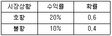
- 0.0012
- 0.0014
- 0.0024
- 0.0048
- 0.0096
(정답률: 알수없음)
111. 다음과 같은 조건하에서 이 부동산기업의 가중평균자본비용(WACC)은? (단, 법인세율은 없음)
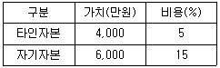
- 9.5 %
- 10.0 %
- 11.0 %
- 11.5 %
- 12.0 %
(정답률: 알수없음)
112. 주택법령상 주택의 정의에 관한 설명으로 옳지 않은 것은?
- 주택은 세대의 구성원이 장기간 독립된 주거생활을 할 수 있는 구조로 된 건축물의 전부 또는 일부 및 그 부속토지를 말한다.
- 준주택은 주택 외의 건축물과 그 부속토지로서 주거시설로 이용가능한 시설 등을 말한다.
- 공동주택은 건축물의 벽ㆍ복도ㆍ계단이나 그 밖의 설비 등의 전부 또는 일부를 공동으로 사용하는 각 세대가 하나의 건축물 안에서 각각 독립된 주거생활을 할수 있는 구조로 된 주택을 말한다.
- 민영주택은 국민주택등을 제외한 주택을 말한다.
- 세대구분형 공동주택은 300세대 미만의 국민주택규모에 해당하는 주택으로서 단지형 연립주택, 단지형 다세대주택, 원룸형 주택으로 분류한다.
(정답률: 알수없음)
113. 다음은 어떤 부동산의 특성에서 파생된 특징을 설명한 것이다. 이를 모두 충족하는 부동산의 특성으로 옳은 것은?
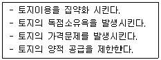
- 부동성
- 영속성
- 부증성
- 개별성
- 용도의 다양성
(정답률: 알수없음)
114. 부동산정책에 관한 설명으로 옳지 않은 것은?
- 부동산정책이란 바람직한 부동산활동을 유도하기 위한 목표설정과 이를 달성하기 위한 각종 부동산대책의 결정 및 운용에 관한 정부의 공적인 계획이나 실행 행위를 말한다.
- 부동산 거래신고 제도는 부동산 거래신고에 관한 법령에 따라 거래당사자가 부동산등에 관한 매매계약을 체결한 경우 그 실제 매매가격 등을 거래계약 후 잔금일로부터 60일 이내에 그 부동산등의 소재지를 관할하는 시장ㆍ군수 또는 구청장에게 공동 또는 예외적인 경우 단독으로 신고하게 하여 건전하고 투명한 부동산 거래질서를 확립하여 국민경제에 이바지함을 목적으로 한다.
- 개발제한구역의 지정 및 관리에 관한 특별조치법령상 국토교통부장관은 국방부 장관의 요청으로 보안상 도시의 개발을 제한할 필요가 있다고 인정되면 개발제한구역의 지정 및 해제를 도시ㆍ군관리계획으로 결정할 수 있다.
- 지적재조사사업은 공간정보의 구축 및 관리 등에 관한 법령에 따라 지적공부의 등록사항을 조사ㆍ측량하여 기존의 지적공부를 디지털에 의한 새로운 지적공부로 대체함과 동시에 지적공부의 등록사항이 토지의 실제 현황과 일치하지 아니하는 경우 이를 바로 잡기 위하여 실시하는 국가사업으로 국토를 효율적으로 관리함과 아울러 국민의 재산권 보호에 기여함을 목적으로 한다.
- 산지관리법령상 국가나 지방자치단체는 산지전용ㆍ일시사용제한지역의 지정목적을 달성하기 위하여 필요하면 산지소유자와 협의하여 산지전용ㆍ일시사용제한지역의 산지를 매수할 수 있다.
(정답률: 알수없음)
115. 분양가상한제에 관한 설명으로 옳지 않은 것은?
- 주택구매 수요자들의 주택구입 부담을 덜어주기 위해 신규분양주택의 분양가격을 주택법령에 따라 정한 가격을 초과하여 받지 못하도록 규제하는 제도이다.
- 주택법령상 사업주체가 일반인에게 공급하는 공동주택 중 공공택지 외의 택지에서 주택가격 상승 우려가 있어 심의를 거쳐 지정하는 지역에서 공급하는 주택의 경우에는 기준에 따라 산정되는 분양가격 이하로 공급하여야 한다.
- 공급자의 이윤이 저하되어 주택의 공급이 감소하는 현상이 나타날 수 있다.
- 주택법령상 사업주체는 분양가상한제 적용주택으로서 공공택지에서 공급하는 주택에 대하여 입주자모집 승인을 받았을 때에는 입주자 모집공고에 택지비, 공사비, 간접비 등에 대하여 분양가격을 공시하여야 한다.
- 주택법령상 사업주체가 일반인에게 공급하는 공동주택 중 공공택지에서 공급하는 도시형 생활주택은 분양가상한제를 적용한다.
(정답률: 알수없음)
116. 부동산조세에 관한 설명으로 옳지 않은 것은?
- 상속세는 과세표준을 화폐단위로 표시하는 종량세에 해당한다.
- 재산세는 지방세에 해당한다.
- 선박은 재산세 과세대상에 해당한다.
- 상속세는 국세에 해당한다.
- 상속세는 직접세에 해당한다.
(정답률: 알수없음)
117. 부동산마케팅에 관한 설명으로 옳은 것은?
- 표적시장(Target market)은 목표시장에서 고객의 욕구를 파악하여 경쟁 제품과 차별성을 가지도록 제품 개념을 정하고 소비자의 지각 속에 적절히 위치시키는 것이다.
- 포지셔닝(Positioning)은 세분화된 시장 중 가장 좋은 시장기회를 제공해 줄 수있는 특화된 시장이다.
- 4P에 의한 마케팅 믹스 전략의 구성요소는 제품(Product), 유통경로(Place), 판매촉진(Promotion), 포지셔닝(Positioning)이다.
- STP란 시장세분화(Segmentation), 표적화(Targeting), 가격(Price)을 표상하는 약자이다.
- 고객점유 마케팅 전략은 AIDA(Attention, Interest, Desire, Action) 원리를 적용하여 소비자의 욕구를 충족시키기 위한 마케팅 전략이다.
(정답률: 알수없음)
118. 부동산관리에 관한 설명으로 옳지 않은 것은?
- 자산관리(Asset Management)는 부동산자산을 포트폴리오(portfolio) 관점에서 관리하는 자산ㆍ부채의 종합관리를 의미한다.
- 재산관리(Property Management)는 시설사용자나 사용과 관련한 타부문의 요구에 단순히 부응하는 정도의 소극적이고 기술적인 측면을 중시하는 부동산관리를 의미한다.
- 대상건물의 기능을 유지하기 위해서 건물에 대해 수리 및 점검을 하는 등의 관리는 기술적 측면의 관리에 해당한다.
- 위탁관리방식은 전문업자를 이용함으로써 합리적이고 편리하며, 전문화된 관리와 서비스를 받을 수 있다는 장점이 있다.
- 기밀유지 측면에서는 자가관리방식이 위탁관리방식보다 유리하다.
(정답률: 알수없음)
119. 도시성장구조이론에 관한 설명으로 옳지 않은 것은?
- 버제스(Burgess)의 동심원이론은 도시생태학적 관점에서 접근하였다.
- 해리스(Harris)와 울만(Ullman)의 다핵심이론은 도시가 그 도시내에서도 수개의 핵심이 형성되면서 성장한다는 이론이다.
- 동심원이론은 도시가 그 중심에서 동심원상으로 확대되어 분화되면서 성장한다는 이론이다.
- 다핵심이론과 호이트(Hoyt)의 선형이론의 한계를 극복하기 위해서 개발된 동심원이론에서 점이지대는 저소득지대와 통근자지대 사이에 위치하고 있다.
- 선형이론은 도시가 교통망을 따라 확장되어 부채꼴 모양으로 성장한다는 이론이다.
(정답률: 알수없음)
120. C도시 인근에 A할인점과 B할인점이 있다. 허프(D.L.Huff)의 상권분석모형을 적용할 경우, A할인점의 이용객수는 C도시 인구의 몇 %인가? (단, 거리에 대한 소비자의 거리마찰계수값은 2이고, C도시 인구 중 50 %가 A할인점이나 B할인점을 이용함)
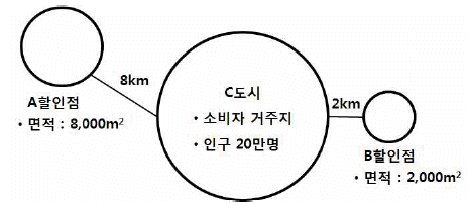
- 5.0 %
- 10.0 %
- 15.0 %
- 20.0 %
- 25.0 %
(정답률: 알수없음)
성년후견인이 동의를 받아야 하는 법률행위의 범위는 민법 제292조에 따라 다음과 같이 정해져 있다.
- 재산관리와 관련된 법률행위
- 소송, 조정, 중재, 화해, 분쟁조정, 재판의 각종 절차에 관한 법률행위
- 선물, 기부, 대여, 담보제공, 보증, 채무부담, 대리행위, 위임, 계약, 변상, 변제, 대리수임, 대리인선임, 대리인해임, 대리인해임승인, 대리인해임승인취소, 대리인해임승인취소승인 등 일부 법률행위
따라서, 가정법원은 이 범위를 벗어나는 행위에 대해서만 피성년후견인이 성년후견인의 동의를 받아야 한다고 판단할 수 있다.